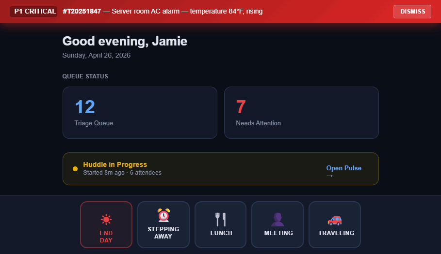
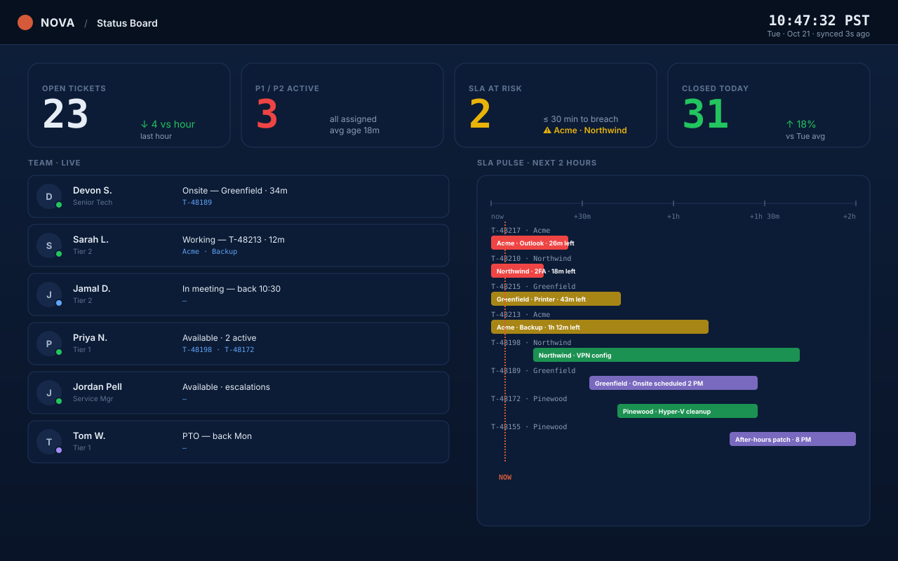

Techs check in and out from their phone. The dispatcher sees the live status board — who's on-site, who's at lunch, who's running long. The same data flows back to Autotask as time entries, so payroll and billing stay clean without anyone re-typing a thing.

Techs open Nova on their phone, see today's on-site visits, and tap "Check in" when they arrive. The status updates in dispatch, the time entry starts in Autotask, and the client gets an optional "your tech is on-site" SMS. Check out with a one-line work summary that becomes the time entry note.
Live grid of every tech, their current state (on-site, in-office, lunch, PTO), the ticket they're on, and the time they've been on it. Color-coded for overruns. Dispatch sees at a glance who's free to take the next escalation.

We'll set up Field Ops on your phone during the demo. Real check-ins, real status, real PSA writeback.